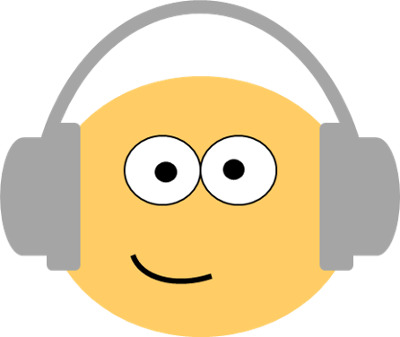

Wofür steht KALLI?
KALLI ist ein Akronym und steht für “Kapselgehörschutz als lärmreduzierende und lernförderliche Intervention” in der Schule und im Unterricht. Das Forschungsprojekt KALLI wird von Mitarbeiter*innen der Universität Potsdam organisiert und koordiniert. Das Forschungsprojekt ist am Institut für Inklusionspädagogik und am Potsdamer Zentrum für empirische Inklusionsforschung verortet.
Worum geht es bei KALLI?
Kinder dürfen laut sein. Jede Lehrkraft weiß: Wenn Kinder zusammen spielen, lernen und interagieren, dann herrscht eine gewisse Lautstärke. Klassenzimmer sind also lebendige Orte der Begegnung und des sozialen Lernens. Die alltäglichen Geräusche im Unterricht sind Ausdruck einer interaktiven sowie offenen Lernkultur. Aber auch Unterrichtsstörungen und Straßenverkehr können den Lautstärkepegel erhöhen.
Manche Schüler*innen lassen sich beim Lernen besonders leicht von Umgebungsgeräuschen ablenken. In der Schule und im Unterricht beobachten wir daher zunehmend, dass Schüler*innen einen Kapselgehörschütz tragen (siehe Pressemeldung). Die kopfhörer-ähnlichen Kapselgehörschützer (sog. Mickey-Mäuse) reduzieren den Lärm und werden z.B. in Einzelarbeitsphasen genutzt.
Allerdings gibt es gegenwärtig wenig Studien zur Wirksamkeit von Kapselgehörschutz bei Lernprozessen im Unterricht (siehe Literaturübersicht). Das Forschungsprojekt KALLI möchte daher folgende Fragen beantworten:
- Welche Umgebungsgeräusche wirken auf Schüler*innen besonders ablenkend?
- Für welche Zielgruppen (z.B. Schüler*innen mit ADHS) ist der Kapselgehörschutz besonders effektiv?
- Bei welchen Schulaufgaben und Lernformen ist der Kapselgehörschutz besonders effektiv?
Mit der Beantwortung der Fragen möchte das Forschungsprojekt KALLI zum adressatengerechten Einsatz von Kapselgehörschutz in der Schule beitragen.
Machen Sie mit bei KALLI!
Liebe Eltern, liebe Lehrkräfte, liebe Schulleitungen: Wir freuen uns über Ihr Interesse am Forschungsprojekt KALLI. Wenn Sie Rückfragen oder Interesse an einer Studienteilnahme haben, dann kontaktieren Sie uns gerne.
Kontaktieren Sie uns!
Projektleitung
- Universität Potsdam
- Institut für Inklusionspädagogik
- Dr. Pawel R. Kulawiak
- Tel: 0331 977 6316
- Email: kulawiak@uni-potsdam.de
Wissenschaftliche Fachpublikationen
Pawel R. Kulawiak (2021) Academic benefits of wearing noise-cancelling headphones during class for typically developing students and students with special needs: A scoping review, Cogent Education, 8:1, DOI: 10.1080/2331186X.2021.1957530